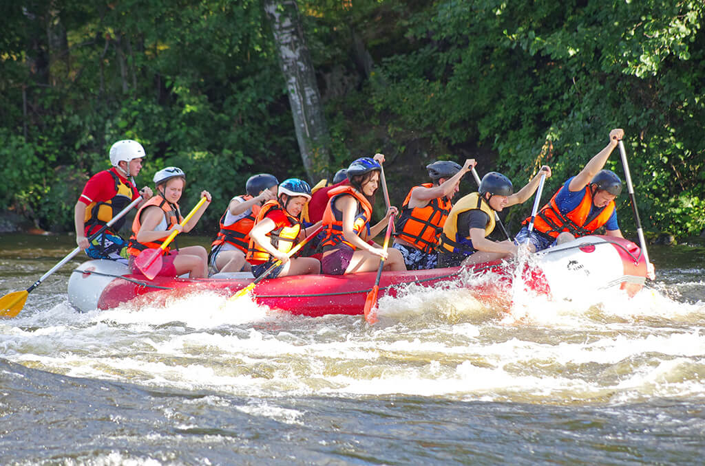

At White Water Rafting, we believe that adventure is a way of life. Join us to navigate the exhilarating rapids and immerse yourself in the breathtaking beauty of nature. Your next great adventure awaits!

Discover the Thrill of White Water Rafting
Our Story
Founded in 2002, White Water Rafting has been at the forefront of providing unforgettable experiences for adventurers of all skill levels. With over 20 years of expertise, we are dedicated to delivering safe, thrilling, and memorable rafting trips that connect you to the great outdoors.
Adventure Awaits You!
Whether you're a seasoned rafter or trying it for the first time, our expert guides are here to ensure you have an incredible experience. From gentle waters to roaring rapids, each trip is an opportunity to challenge yourself and create lasting memories.